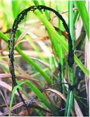
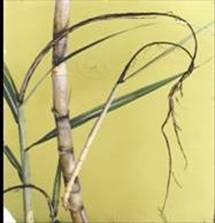

SUGARCANE :: MAJOR DISEASE :: SMUT
Smut - Ustilago scitaminea
Symptoms
It is a culmiculous smut. The affected plants are stunted and the central shoot is converted into a long whip-like, dusty black structure. The length of the whip varies from few inches to several feet. In early stages, this structure is covered by a thin, white papery membrane. The whip may be straight or slightly curved.
On maturity it ruptures and millions of tiny black smut spores (teliospores) are liberated and disseminated by the wind. Affected plants are usually thin, stiff and remain at acute angle. The whip like structure, representing the central shoot with its various leaves, may be produced by each one of the shoots/tillers arising from the clump.
{kind=link}
|  |  |
Symptoms |
|
The smutted clumps also produce mummified arrows in which lower portion consisted of a normal inflorescence with typical flowers and the upper portion of the rachis is converted into a typical smut whip. Occasionally smut sori may develop on the leaves and stem.
Pathogen: The fungal hyphae are primarily intercellular and collect as a dense mass between the vascular bundles of host cell and produce tiny black spores. The thin membrane which covers the smut whip represents the host epidermis. The smut spores are light brown in colour, spherical, echinulated and measuring 6.5- 8.5µm in diameter. Smut spores germinate to produce 3-4 celled, hyaline promycelium and produce 3-4 sporidia which are hyaline and oval shaped with pointed ends.
Smut Video
Favourable Conditions
- Monoculturing of sugarcane.
- Continuous ratooning and dry weather during tillering stage.
Disease cycle
Teliospores may survive in the soil for long periods, upto 10 years. The spores and sporidia are also present in the infected plant materials in the soil. The smut spores and dormant mycelium also present in or on the infected setts. The primary spread of the disease is through diseased seed-pieces (setts). In addition, sporidia and spores present in the soil also spread through rain and irrigation water and cause soil-borne infection. The secondary spread in the field is mainly through the smut spores developed in the whips, aided by air currents. The fungus also survives on collateral hosts like Saccharum spontaneum, S. robustum, Sorghum vulgare, Imperata arundinacea and Cyperus dilatatus.
Management
- Plant healthy setts taken from disease free area.
- Remove and destory the smutted clump (collect the whips in a thick cloth bag/polythene bag and immerse in boiling water for 1 hr to kill the spores).
- Discourage ratooning of the diseased crops having more than 10 per cent infection.
- Follow crop rotation with green manure crops or dry fallowing.
- Grow redgram as a companion crop between 2 rows of sugarcane.
- Grow resistant varieties like Co 7704 and moderately resistant varieties COC 85061 and COC 8201.